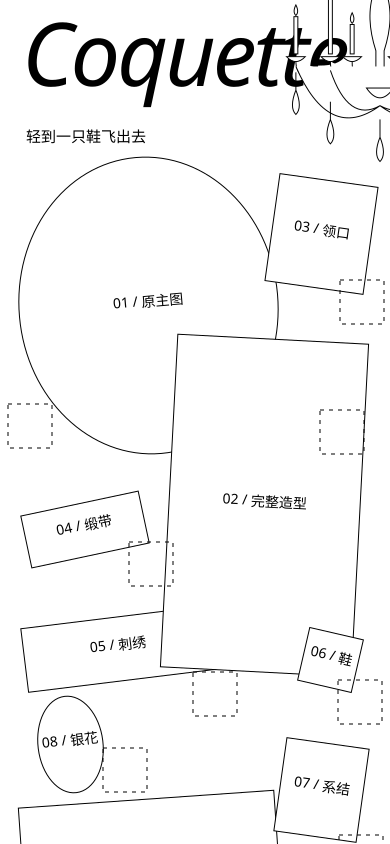
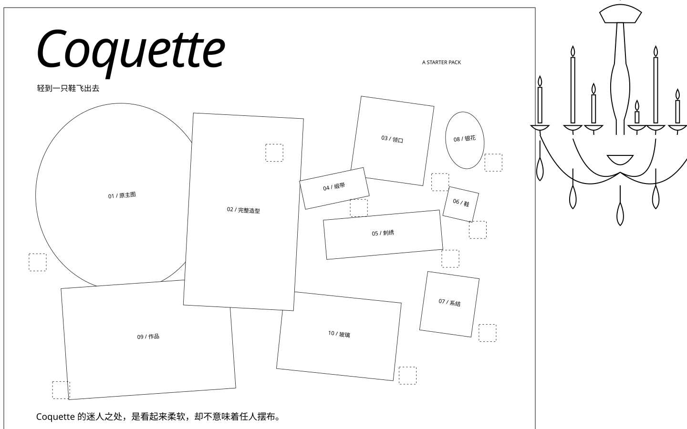

黑线结构草图 · 吊灯线条只是结构占位，矩形与椭圆代表原拼贴图像，均非新美术。


结构检查结果手机标题仍为88px，作品不缩小；桌面标题约108px。用原吊灯透明区域与真实文字、图像、编号范围核对，两端均未发现遮挡。
仍需审图的取舍手机只能保留侧切的局部，不能同时看到大半盏灯。草图证明能摆下，不能证明白色吊灯的美感已经保住。
本轮只检查构图，未试黑白底色，也未修改定稿拼贴或Figma。没有用新的完整美术掩盖结构问题。